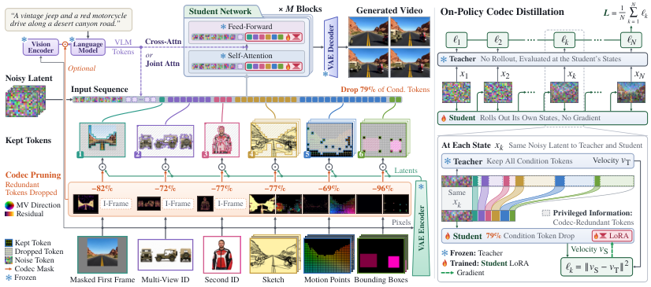

Paper Notes
01 · Where the Redundancy Comes From
统一视频模型可以同时接收身份参考、姿态、深度、草图、轨迹与运动视频。这些视觉条件编码成 token 后，与噪声 latent 一起进入 Transformer。即使输出长度不变，增加参考也会加长注意力序列，并提高条件 K/V 的存储和读取成本。
作者的出发点是传统视频编码：如果一个区域能够由邻近空间或过去帧很好预测，就不必反复携带等量的新信息。这是可操作的冗余信号，不是语义重要性的严格定义。一个静止标记虽然运动很小，仍可能对控制至关重要。
Paper Notes
02 · Codec Signals Become a Token Mask
H.264 的帧内预测利用邻近内容，帧间预测利用运动补偿；预测残差描述还不能解释的内容。论文把运动向量幅度与残差聚合到对应的时空 token 支撑区域。运动大或残差大的 token 保留，低运动且低残差的 token 更容易被删除。
记 M_i 为 token 区域的最大运动幅度，R_i 为按帧聚合的残差强度，阈值形式是 M_i≥τ_m 或 R_i>τ_r。固定预算时，还可以按归一化残差与运动构成的优先级 E_i=R̄_i(1+λM̄_i) 排序。两者是筛选规则，不是通过生成损失反向训练出的可微掩码。
这些统计需要对齐 VAE 的时空压缩尺度，并随条件尺寸调整。I 帧没有相同的帧间运动信息，主要依靠残差。附录列出了编码器读取修正和按条件类别调整的配置；因此方法并非随意读取一个默认码流就能稳定适用于全部模态。
Keep(i) = [M_i ≥ τ_m] OR [R_i > τ_r] E_i = R̄_i · (1 + λ M̄_i)
Paper Notes
03 · Reading the Architecture

Boyang Wang et al., 2026. Original figure, unchanged. CC BY 4.0. · Paper & Caption ↗
原图左下方是多种视觉条件：先分析 codec 信号，再由冻结 VAE 编码，依据掩码取出保留 token。被删的位置仍保留原始位置编号用于 3D RoPE，不能把剩余 token 重新排列成一个连续小视频，否则会破坏其空间和时间含义。
上方学生 DiT 接收噪声 token、保留的条件 token 和文字条件，最后由 VAE 解码视频。删减的是条件，不是正在被去噪的输出表示。实现上需要真正缩短序列；仅把 token 乘零仍保留同样注意力尺寸，不能得到同等加速。
图中可选 VLM 通道也能在视觉编码后筛掉部分视觉 token，再送入语言模型。由于视觉编码器已经运行，这部分不等于减少其全部编码成本。基础方法的 LoRA 作用于条件 token 对应投影，噪声 token 的完整计算路径仍在。
Paper Notes
04 · Why the Distillation Is On-Policy
直接删掉输入并不意味着原模型理解“这里是可预测的重复内容”。它也可能把缺失条件解释成未知内容，重新发明细节。附录展示无训练剪枝后出现轨迹偏离、动作重启及标签内容幻觉，说明适应稀疏条件本身是一个学习问题。
右侧训练图的关键是同一个 x_k：学生先用稀疏条件运行自己的采样器，得到它实际会遇到的状态。教师与学生随后在同一状态、同一噪声水平分别预测速度，教师看到完整条件，学生只看保留部分。教师无需再独立生成另一条轨迹。
损失为两种速度预测的均方误差。学生 rollout 的状态停止梯度，教师输出也停止梯度，更新的是学生 LoRA；不是通过完整采样链和 codec 选择器反向传播。这样监督落在学生自身的偏移状态上，减少仅在教师轨迹训练造成的状态分布不一致。
主模型采用 30 步采样，训练监督前 8 个状态；训练 2,000 步、使用 16 张 H200。论文还单独在加速实验中使用 8 步配置，不能把这两组步数混用。该方法减少每步条件计算，并非把 30 步直接蒸馏成 8 步的少步生成方法。
xₖ₊₁ = xₖ + (σₖ₊₁ − σₖ) vS(xₖ, σₖ, Ckeep)
L = E[ (1/N) Σₖ ‖vS(sg(xₖ), σₖ, Ckeep)
− sg(vT(sg(xₖ), σₖ, Cfull))‖² ]
sg: stop-gradient; only student adapter parameters are updated.Paper Notes
05 · Quality, Speed, and the Evaluation Boundary
主实验基于作者内部 22B 多条件模型，覆盖 16 种条件。质量测试从 VidGen-1M 构建的测试池抽取 400 个片段，每例有 1–4 种条件；比较随机删减、降分辨率以及视觉注意力或显著性方法，并对训练步数及 token 预算做对照。平均约删 66% 条件 token 后，CodecOPSD 在报告的 12 项指标中有 10 项最佳。
速度实验使用另一组 200 个片段、512×896 分辨率、121 帧和 8 步采样，在一张 H200 上测量。无 KV 缓存时去噪加速 1.54–2.30 倍；启用缓存后为 1.15–1.37 倍，缓存内存减少 62–73%。这些是去噪或缓存指标，不能表述为总显存下降 73% 或端到端始终快两倍。
原因是缓存已免去了每一步重复计算条件的部分开销；剪枝剩余收益主要来自缩短对条件的注意力。无缓存时，条件自身的逐步计算也被削减。预处理在六个 CPU 核上约 1.13 秒，可与其他编码重叠；实际端到端收益仍取决于能否重叠及 VAE、文字编码等固定成本。
人评中的 92% 条件遵循和 88% 质量是“相当或更好”的比例，不能读作严格获胜率。扩展到 H3 Ref2VA 时，237 例是按参考 token 多寡从 OmniVBench 筛选的重参考子集，覆盖各任务，但不是完整基准的随机样本；作者还替换了官方评判模型，绝对分数不能直接并入原榜单。
Paper Notes
06 · What the Ablations Actually Support
教师条件信息更充分，是这个训练设计的核心。缩小教师与学生的信息差并不必然更好：报告的较小差距配置 FID/FVD 为 23.7/123.9，标准配置为 23.0/113.8；继续扩大到学生删 90% 时为 23.8/124.3，指标越低越好。它支持适度信息差有利于此设置，但不是一个普适最优剪枝比例。
不同条件的冗余显著不同。密集外观信息不能像稀疏轨迹和框图一样大幅裁剪；后者的大面积背景更容易被编码预测。不过静止轨迹点被删后，模型可能混淆“仍在原地”与“已经遮挡或不再提供”，论文把这一点列为明确限制。
这篇最值得保留的思路，是把廉价的结构先验与学习适应分开：codec 决定一个实际可计算的稀疏模式，蒸馏让模型学会在这种模式下工作。它与仅减少采样步数的加速互补，也与长期记忆选择相关；但条件冗余不等于历史证据价值，不能直接拿同一阈值作为三维重建的记忆淘汰规则。
Discussion
Reading Questions
Why use student states rather than teacher trajectories?
推理时学生使用删减条件，会进入与教师不同的状态。让完整条件教师在这些状态上提供速度目标，直接训练学生修正自己的偏移。
Why is the speedup smaller with a KV cache?
缓存已经避免了部分重复条件计算，剪枝不能再次获得这部分收益；仍可缩短条件注意力和缓存尺寸。
Is codec predictability the same as semantic irrelevance?
不是。低残差或静止区域可能承载重要控制，静止轨迹点是论文给出的反例。需要质量对照和模态配置，而非将 codec 分数解释成语义重要性。
References
Figure 3 is reproduced unchanged under CC BY 4.0 and attributed to Boyang Wang et al. Results refer to the cited paper version; no local model reproduction was performed.
Verified on 2026-11-27. Paper results refer to the linked versions. Official paper metadata was checked on this date.